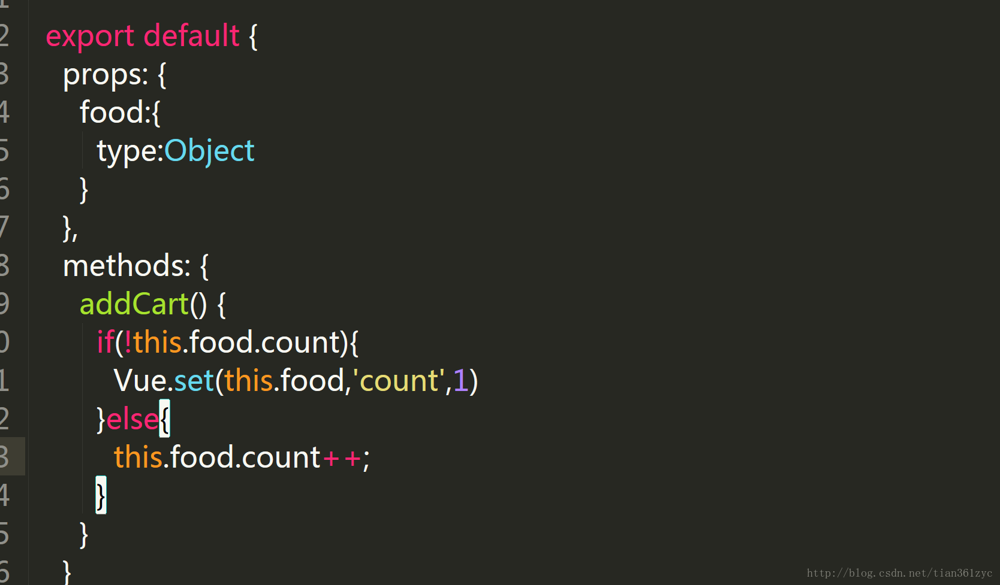

Vue.js 模板语法
Vue.js 使用了基于 HTML 的模板语法，允许开发者声明式地将 DOM 绑定至底层 Vue 实例的数据。
Vue.js 的核心是一个允许你采用简洁的模板语法来声明式的将数据渲染进 DOM 的系统。
结合响应系统，在应用状态改变时， Vue 能够智能地计算出重新渲染组件的最小代价并应用到 DOM 操作上。
插值
文本
数据绑定最常见的形式就是使用 {{...}}（双大括号）的文本插值：
Html
使用 v-html 指令用于输出 html 代码：
v-html 指令
尝试一下 »
属性
HTML 属性中的值应使用 v-bind 指令。
以下实例判断 use 的值，如果为 true 使用 class1 类的样式，否则不使用该类：
v-bind 指令
尝试一下 »
表达式
Vue.js 都提供了完全的 JavaScript 表达式支持。
JavaScript 表达式
尝试一下 »
指令
指令是带有 v- 前缀的特殊属性。
指令用于在表达式的值改变时，将某些行为应用到 DOM 上。如下例子：
实例
尝试一下 »
这里， v-if 指令将根据表达式 seen 的值(true 或 false )来决定是否插入 p 元素。
参数
参数在指令后以冒号指明。例如， v-bind 指令被用来响应地更新 HTML 属性：
实例
尝试一下 »
在这里 href 是参数，告知 v-bind 指令将该元素的 href 属性与表达式 url 的值绑定。
另一个例子是 v-on 指令，它用于监听 DOM 事件：
<a v-on:click="doSomething">
在这里参数是监听的事件名。
修饰符
修饰符是以半角句号 . 指明的特殊后缀，用于指出一个指令应该以特殊方式绑定。例如，.prevent 修饰符告诉 v-on 指令对于触发的事件调用 event.preventDefault()：
<form v-on:submit.prevent="onSubmit"></form>
用户输入
在 input 输入框中我们可以使用 v-model 指令来实现双向数据绑定：
双向数据绑定
尝试一下 »
v-model 指令用来在 input、select、textarea、checkbox、radio 等表单控件元素上创建双向数据绑定，根据表单上的值，自动更新绑定的元素的值。
按钮的事件我们可以使用 v-on 监听事件，并对用户的输入进行响应。
以下实例在用户点击按钮后对字符串进行反转操作：
字符串反转
尝试一下 »
过滤器
Vue.js 允许你自定义过滤器，被用作一些常见的文本格式化。由"管道符"指示, 格式如下：
<!-- 在两个大括号中 -->
{{ message | capitalize }}
<!-- 在 v-bind 指令中 -->
<div v-bind:id="rawId | formatId"></div>
过滤器函数接受表达式的值作为第一个参数。
以下实例对输入的字符串第一个字母转为大写：
实例
尝试一下 »
过滤器可以串联：
{{ message | filterA | filterB }}
过滤器是 JavaScript 函数，因此可以接受参数：
{{ message | filterA('arg1', arg2) }}
这里，message 是第一个参数，字符串 'arg1' 将传给过滤器作为第二个参数， arg2 表达式的值将被求值然后传给过滤器作为第三个参数。
缩写
v-bind 缩写
Vue.js 为两个最为常用的指令提供了特别的缩写：
<!-- 完整语法 --> <a v-bind:href="url.html"></a> <!-- 缩写 --> <a :href="url.html"></a>
v-on 缩写
<!-- 完整语法 --> <a v-on:click="doSomething"></a> <!-- 缩写 --> <a @click="doSomething"></a>

苏安年
188***625@qq.com
给元素绑定href时可以也绑一个target，新窗口打开页面。
new Vue({ el: '#app', data: { url: 'http://www.runoob.com', target:'_blank' } })尝试一下 »
苏安年
188***625@qq.com
锋
cka***ng@qq.com
参考地址
当我们给一个比如 props 中，或者 data 中被观测的对象添加一个新的属性的时候，不能直接添加，必须使用 Vue.set 方法。
Vue.set 方法用来新增对象的属性。如果要增加属性的对象是响应式的，那该方法可以确保属性被创建后也是响应式的，同时触发视图更新

这里本来 food 对象是没有 count 属性的，我们要给其添加 count 属性就必须使用 Vue.set 方法，而不能写成 this.food.count = 1
锋
cka***ng@qq.com
参考地址
野鬼yor
462***358@qq.com
过滤器可以接收多个表达式，message 和 mesage2 将作为过滤器的前两个参数：
<div id="app"> {{ message,message2 | capitalize('aa') }} </div> <script> new Vue({ el: '#app', data: { message: 'runoob', message2: 'runoob' }, filters: { capitalize: function (value,value2,value3) { if (!value) return '' value = value.toString() return value.charAt(0).toUpperCase() + value.slice(1)+value.substring(0,value2.length-1)+value2.charAt(value2.length-1).toUpperCase()+'<br>'+value3 } } }) </script>尝试一下 »
野鬼yor
462***358@qq.com
大橙子橙子大
160***1252@qq.com
split('') 是分裂的意思，也就是把一个数据拆分。
var vm = new Vue({ date:{ message=" Not split " } )} message.split('') == [ "N", "o", "t", " ", "s", "p", "l", "i", "t" ]split('') 会把数据拆分为一个数组，括号里的 '' 是把数据拆分为每个字符串的意思，如果不用就不会拆分成每个字符串。
reverse() 是翻转的意思，把数据反过来。
所以要跟在 split('') 后使用。
join('') 是重组的意思，把数组合成一个字符串。
message.split('').join('')slpit 后会拆散会数组，join 后就会变回原来的字符串了。
所以我们要把数据反过来重组就可以用：
message.split('').reverse( ).join('')大橙子橙子大
160***1252@qq.com
runoob_run
xty***roear.com
data 内部设定的属性名称不能与 html（v-bind: ）名称一致，比如：
<div id="app"> <a v-bind:href="url.html" :class="classS" rel="nofollow">菜鸟教程</a> </div> <script> new Vue({ el: '#app', data: { classS: 'class' } }) </script>runoob_run
xty***roear.com
鱼猫
a16***02350@163.com
v-model 练习（任意输入内容的首个最长回文段）
<div id="app"> <input v-model="s"> <div v-html="'首个最长回文：'+changes()"> </div> </div> <script> new Vue({ el: '#app', data:{ s:"dsad", }, methods:{ changes:function(){ var s = this.s; var max = ""; for (var i = 0; i < s.length; i++) { var mas = s.charAt(i);//定义回文中心 masH = i - 1;//回文左边界 masF = i + 1;//回文右边界 while (masH >= -1 & masF < s.length) { //奇数回文中心变化 if (s.charAt(masH) == s.charAt(masF)) { mas = s.charAt(masH) + mas + s.charAt(masF); masH--; masF++; } else { //偶数回文中心变化 if (s.charAt(masF) == s.charAt(masF - 1)) { mas += s.charAt(masF); masF++; } else { break; } } } //只采用第一个最长回文 if (mas.length > max.length) { max = mas; } } return max; } } }) </script>鱼猫
a16***02350@163.com
大虾
ner***233@126.com
针对表达式的应用和多个属性参数的使用：
<div id="app"> {{ message | capitalize('!',label,1<2?true:false) | capitalize2}} </div> <script> new Vue({ el: '#app', data: { message: 'runoob', label:'———' }, filters: { capitalize: function (value,value2,value3,value4) { if (!value) return '' value = value.toString() console.log('capitalize1调用'); return value.charAt(0).toUpperCase() + value.slice(1)+value2+value3+value4; }, capitalize2: function (value) { if (!value) return '' value = value.toString() console.log('capitalize2调用'); return value.charAt(0)+value.charAt(1).toUpperCase() + value.slice(2); } } }) </script>尝试一下 »
大虾
ner***233@126.com
晨晨
102***4220@qq.com
v-bind 缩写
Vue.js 为两个最为常用的指令提供了特别的缩写：
晨晨
102***4220@qq.com
eunseoa
yan***jy@cn.fujitsu.com
双向绑定和字符串反转一起使用：
<div id="app"> <input type = "text" v-model = 'message'> <p>请输入原始字符串: {{ message }}</p> <button @click = "stringReverse">点我反转字符串</button> <p>计算后反转字符串: {{ newMessage }}</p> <button @click = "clear">点我清空</button> </div> <script> var vm = new Vue({ el: '#app', data: { message: '', newMessage: '' }, methods: { // 计算属性的 getter stringReverse:function(){ // `this` 指向 vm 实例 this.newMessage = this.message.split('').reverse().join(''); }, clear:function(){ this.message = ''; this.newMessage = ''; } } }) </script>尝试一下 »
eunseoa
yan***jy@cn.fujitsu.com